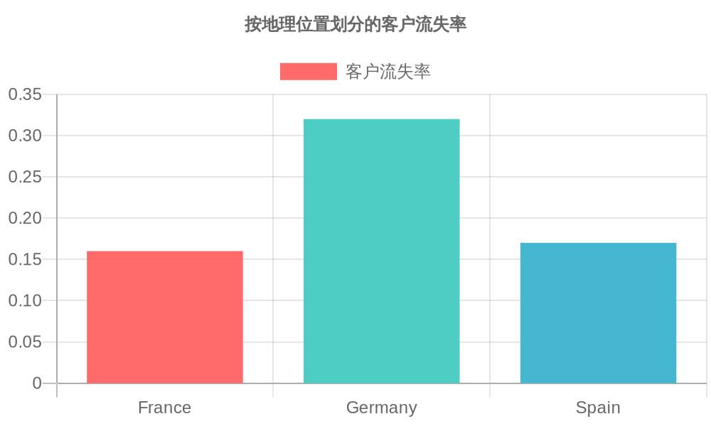
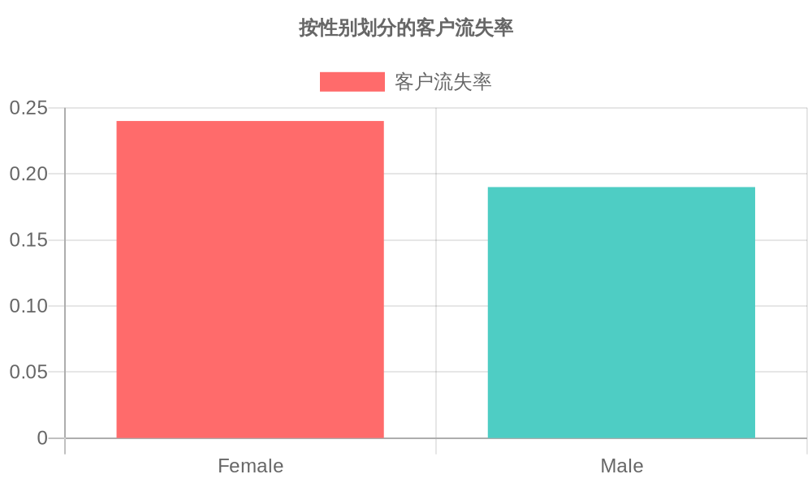
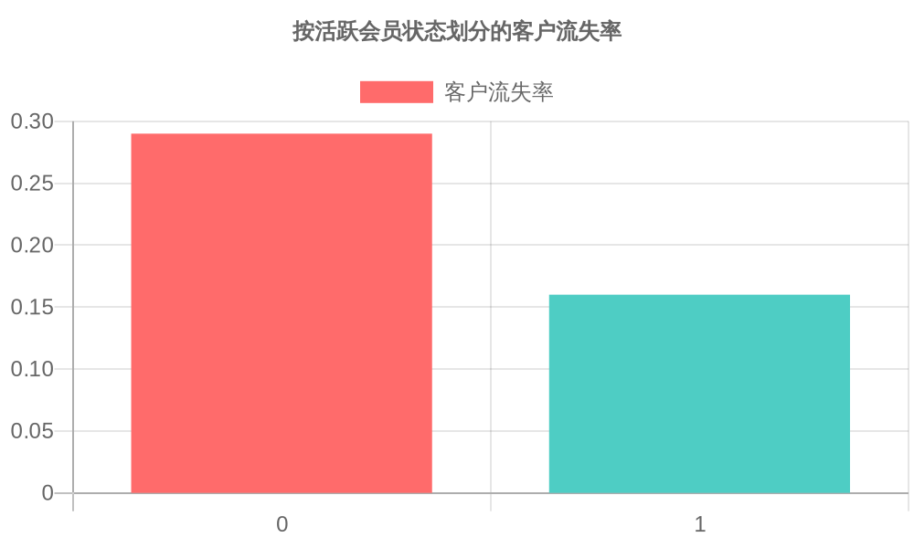

客户流失分析报告
2023年10月
概述
本报告旨在分析银行客户流失数据，识别导致客户流失的关键因素，并提供数据驱动的见解。数据集包含1000条客户记录，包括客户ID、姓氏、信用评分、地理位置、性别、年龄、任期、余额、产品数量、是否有信用卡、是否活跃会员、估计薪资和是否流失（Exited）等字段。
数据分析结果
总体流失率
在1000名客户中，总共有203名客户流失，总体流失率为20.3%。
按地理位置划分
- 法国: 流失率约为16%。
- 德国: 流失率约为32%。
- 西班牙: 流失率约为17%。
德国的流失率明显高于其他国家，表明地理位置对客户流失有显著影响。
按性别划分
- 女性: 流失率为24%。
- 男性: 流失率为19%。
女性客户的流失率高于男性客户，表明性别在客户流失中也起到一定作用。
按年龄划分
年龄分布与流失率的关系表明：
- 年龄在50岁以上的客户流失率较高。
- 45岁左右的客户流失率达到峰值。
这表明中年及老年客户群体更有可能流失，需要特别关注。

按产品数量划分
- 0个产品: 流失率为25%。
- 1个产品: 流失率为22%。
- 2个产品: 流失率为26%。
- 3个产品: 流失率为35%。
- 4个产品: 流失率高达50%。
拥有更多产品的客户流失率更高，这可能表明客户在使用多个产品时体验不佳。

按活跃会员状态划分
- 非活跃会员: 流失率为29%。
- 活跃会员: 流失率为16%。
活跃会员的流失率明显较低，表明提升客户活跃度可以有效降低流失率。
